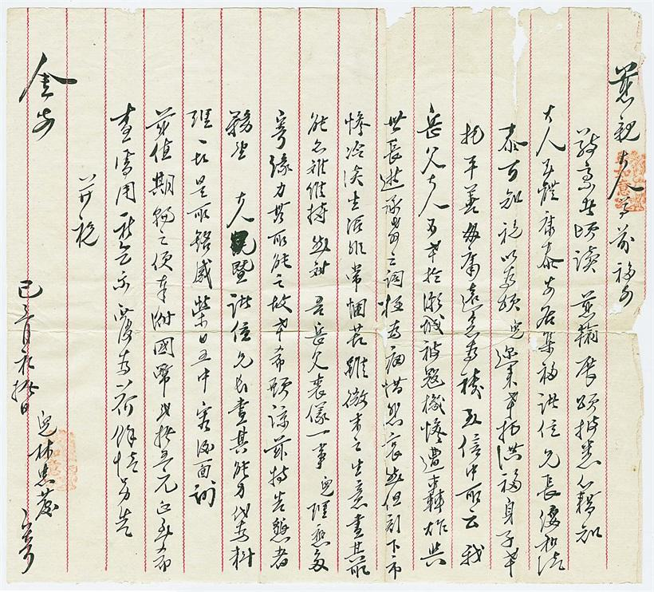

目录
首页

第 三 章
斑斑血泪斑斑恨
抗日战争时期潮汕侨批
馆藏侨批档案介绍（三）
"玉信中所云我岳父大人不幸于潮城被寇机惨遭轰炸，与世长逝……"
1937 年8 月31 日开始，日军飞机多次到潮汕地区侦察和轰炸，无数无辜平民被炸死伤。在汕头市档案馆馆藏侨批中，有一封新加坡华侨林忠发寄给母亲的信便留下了这段历史痕迹。在信中，我们可以得知其岳父就在轰炸中不幸丧生，这封言辞悲痛的侨批是日本军国主义发动侵华战争斑斑恶行的见证。
馆 藏 原 件
己三月初拾日 · 新加坡华侨林忠发寄母亲书
慈亲（1）大人尊前福安：
敬禀者。顷（2）读慈谕（3），展颂披（4）悉（5）。籍（及）（6）知大人玉体康泰，安居集福，诸位兄长绥和清泰，可知祝以为颂。儿迩来（7）幸托洪福，身子幸托平善，毋庸（8）远念为祷。
玉信中所云我岳父大人不幸于潮城被寇机惨遭轰炸，与世长逝。承教（9）之词极为痛惜悲哀，然但刻下市惨冷淡，生活非常困苦，虽微末之生意，尽其所能仍难维持。
然对吾岳父丧仪一事，儿理应多寄，缘（10）力其所能之故，幸希愿（原）谅。兹特告恳者，务望大人暨诸位兄长尽其能力代为料理一切。是所铭感荣日五中（11），容后面谢！
兹值期轮之便，附国币贰拾伍元正（整），到希查处用。祈乞示覆（复）为荷（贺）。余情另告。
并祝金安！
己三月初拾日
儿林忠发寄
（1）慈亲：母亲。旧时认为父严母慈，故称父亲为"家严"，称母亲为"家慈"。
（2）顷：刚、才。顷之、有顷，指时间才过不久。
（3）谕：上告下的通称，如面谕、谕示。侨批中常将长辈的信称为"谕、教、示"等，以示尊敬。
（4）披：开，展开。"披三条之广路"（《文选·班固<西都赋>》）
（5）悉：知道。
（6）籍：此处通"及"，等到。
（7）迩来：近来。
（8）毋庸：不用。
（9）教：同"谕"，见注释3。
（10）缘：因为。
（11）五中：五脏，此处指内心。铭感五中，指由衷地铭记在心。
今天（9月3日）是中国人民抗日战争胜利第78周年纪念日。日本侵华战争这一血泪斑斑的历史在侨批中也留下了不可磨灭的痕迹，值得后人警醒、深思。